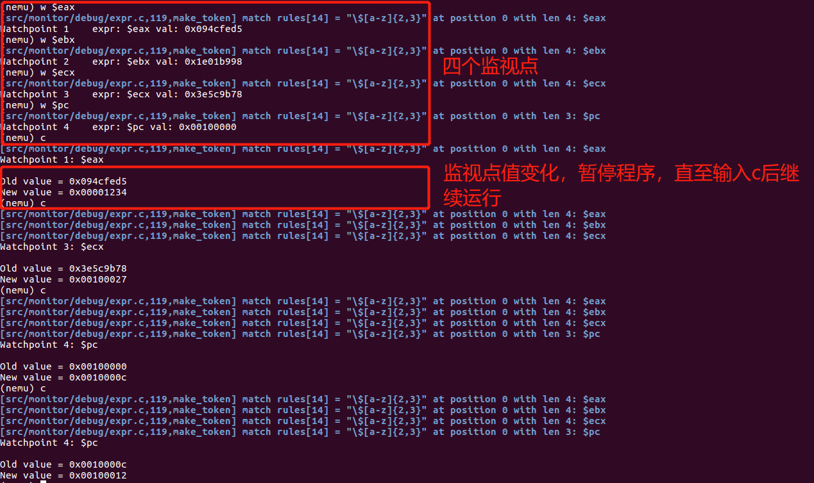

我们在PA1中已经对NEMU的框架代码进行了一番阅读。通过完成PA1中的表达式求值1和简易调试器1，我们对NEMU的工作流程，ui_mainloop对用户输入的响应已经有了更加深入的了解。在PA1的整个过程中，我们的NEMU系统并不能直接从pc取指，并用ALU进行运算。实际上，整个系统是由NEMU和用户一起构成的。
下面请将你自己想象成一个简易CPU，你的手里有一个“指令”集合：echo, help, p, ls, pwd, info ...，而你自身有一个随机的pc，每次你将会随机从“指令”集合中抽取一条指令，然后交由NEMU执行。在这个过程中，你充当了pc取指的角色(cpu)，而整个计算机系统还需要计算单元、控制部件、存储器等。回想一下已经实现的expr.c，当你输入p 1+1时这条“指令”时，是NEMU帮你完成了计算过程，并返回给你计算结果，此时的expr.c中的expr函数实际上就相当于一个ALU。而NEMU的存储器并没有发挥作用，因为整个存储器是你的大脑，是你的大脑随机从你的大脑中取出了一条条“指令”，并交由NEMU执行。PA1整个过程将使用上述的一种“系统”，因此在后续过程中，请将你自己抽象为NEMU的pc和存储器，并将C语言看作NEMU系统的机器级语言，而将C语言级别以下的二进制指令码、汇编代码全部忽略掉(PA2的主要内容)。
如上面所述，PA1上我们完成了整个系统的ALU部分，要注意到你现在充当了CPU和存储器的角色了。因此我们还需要实现一个简易的控制单元用于检查内存中数据的流动及传输。当然这里的控制单元与CU有区别(CU是自动逐条取指并译码)。由于取指已经由大脑实现，而译码已经由ui.c实现，此处的控制单元实际上是指对系统状态进行监视的组件(monitor)。为了避免混淆，以下均使用监视器来代替。事实上，PA1的简易调试器1已经有了监视器初级的功能，比如逐条执行指令(si)，扫描内存(x)，查看寄存器(info r)等。但是我们还无法真正进行监视，因为我们只能进行查看而无法进行控制，比如我们要对寄存器%eax进行监视，然而我们只能通过info r来查看寄存器%eax的值。
因此，PA1下的重点就是完善这个监视器。在完善监视器前我们先对监视做一些直观介绍。
监视 ，回想一下高中教师外班主任鹰隼般锐利的目光，即使远处墙外，也能带来一股无形的压迫力。一旦出现异常举止，下一秒就带着疲倦的风来到你的位置。此处的监视也类似：随时检查监视的目标是否出现异常变化。一个监视由监视目标和定义异常和处理异常三部分组成。比如下面的例子：
watch nemu_state.state == NEMU_GOOD
watch后面指定了监视对象为nemu_state.state，而异常条件为nemu_state.state!=NEMU_GOOD。其作用就是监视NEMU的运行状态是否健康，一旦状态由于不知名的修改而改变，立马执行异常处理(一般都是终止指令执行，将控制权交由用户)。在NEMU实现一次监视需要指明监视目标，定义异常条件，实现异常处理。
看到上面的watch nemu_state == NEMU_GOOD，你是否回想起了PA1上在ui.c里面实现的命令(如p 1+1)。事实上，一个监视命令需要在ui.c里面附加实现一个w命令，然后通过将后面的异常条件(其实就是表达式)进行表达式求值即可。
由此，实现一个监视命令实际上还是和表达式求值相关。因此本次PA1下主要分为以下内容：
正式开始本次PA1之前，请大家先按照以下命令做好git项目的分支管理
cd ~/ics2020 ## 进入ics项目
git branch ## 查看分支
git checkout pa1 ## 确保在pa1分支下
一定要保证你当前的分支是pa1，然后下载我们上传到Elearning的文件压缩包，解压出六个文件(codes文件夹下)：
- gen-expr.c，复制到
nemu/tools/gen-expr/下面- watchpoint.h 复制到
nemu/include/monitor/watchpoint.h下面- watchpoint.c 复制到
nemu/src/monitor/debug/下面- psmd.txt复制到
nemu/src/下面(不会提醒替换文件)- test.txt复制到
nemu/src/下面(不会提醒替换文件)- main.c复制到
nemu/src/下面
复制的时候如果没有提醒你替换文件，请核对复制的文件路径。
为了顺利完成PA1上的内容，我们首先给出以下参考资料：
- 南大NJU gitbook：链接
在PA1中，我们以合法的token集合：数字[0-9]、0x、+、-、*、/、(、)、空格、==、a-f/A-F通过完成expr.c实现了简单的表达式求值。然而，由于复杂的token正则表达式识别、识别顺序、运算符优先级等因素，导致虽然会给出结果，但是难以保证我们的结果是正确的。
一种保证程序正确性的方法就是用大量用例进行测试，比如在lab1中，我们通过大量随机生成的用例测试大家完成的operations.c中各项函数。因此在表达式求值中，我们也需要使用大量用例对其进行测试。此处我们为大家准备了一组测试样例(psmd.txt)，由随机生成的248组表达式及其准确值组成，样例如下(左边是表达式的正确结果，右边是对应表达式)：
4294921411 ( 16+96/(35/((42))-42-38+7)- 60*17*45)
132 82+(95-34)-13*50/(((59)))
0 19/(89- 31*(18)+87)
1094 98/ 89*( (58)/21)+42*(26)
4294946953 46+ 45-(23)*37*24-10
4294961034 97*88*13/(84)-96*79+1
6 8/21+82-76-88*71*7/( 70*8-63*((40))*83)
430 66/11+84+ ((3)+7)*34
391598 80*55*89+ 62-(62)+(( 4-20+ 14))
4294955193 ((22)+68- (47/80/ 65*13+97*98+33*(83)+83* (78/92)))+52-88/41*1/(99/29)
这组样例只包含了加减乘除基本四则运算。为了测试你的表达式求值，只需要在main函数里逐行读入文件内容，比较正确结果和你的expr(char * args, bool * success)的运行结果即可。为了保证结果的格式，请将你的expr(char *, bool *)函数的返回值设置为unsigned类型。为了方便测试，我们已经在main.c里实现了逐行读取并测试的函数，所以只需要将测试样例psmd.txt复制到nemu/src下，将expr(char *, bool *)返回值修改为unsigned类型，用make ISA=x86 run编译即可。
如果你觉得测试样例不够多，样例运算符类型较少，请移步至表达式求值测试2部分。
如果执行后的结果如下图所示，说明你的表达式求值对四则运算基本上是正确的。为了通过表达式求值测试1，请从以下几个方面进行思考：

如果出现错误用例，界面上也会输出对应错误样例。如下图所示：

到此，对表达式求值1的测试完成。
我们进行表达式求值的目的在于实现监视器(monitor)。实际上，仅仅有四则运算基本上对监视点没有帮助。回想一下在lab2中的GDB设置断点(断点是程序运行到此处停止，监视点是检查到不同行为停止)，比如下面的例子：
break * 0x800482c
break phase_1
这两个例子根本就没有用到四则运算，再如我们对寄存器%eax进行监视，使用命令w $eax，也不会使用到四则运算。这告诉我们需要对表达式求值进行扩充。为此，我们总结出以下token集合(PA1下要求实现)：
+、-、*、/、(、))，即加减乘除和括号&&、||、!、==、!=)*)，如*0x100000表示访问内存中0x100000处的4字节pc操作($)，如$eax, $ebx, $pc等[0-9]、0x[0-9|a-f|A-F])-负号)特别的，对应的BNF如下：
<expr> ::= <number> # 一个数是表达式
| "(" <expr> ")" # 在表达式两边加个括号也是表达式
| <expr> "+" <expr> # 两个表达式相加也是表达式
| <expr> "-" <expr> # 运算符连接表达式仍然是表达式
| <expr> "*" <expr>
| <expr> "/" <expr>
| <expr> "&&" <expr>
| <expr> "||" <expr>
| <expr> "==" <expr>
| <expr> "!=" <expr>
| "*" <expr> # 指针解引用
| "-" <expr> # 负号连接表达式
| "$" <registers/pc> ## $eax, $pc也是表达式($rax等非法输入需要识别并抛出错误)
除了寄存器和pc操作外，其余运算符的优先级和C语言的规定相同。
为了将寄存器和pc的token转化为具体值，你还需要完成nemu/src/isa/x86/reg.c下的isa_reg_str2val函数，你的函数对非法寄存器应该要做对应的处理(assert或者放弃本次计算均可)。
为了正确识别并处理表达式，你还需要注意以下两方面：
token的区分以下分别对其进行说明：
重复token的区分
重复的token有两种，一是符号和减号，而是乘法运算符和指针解引用。实际上，如果用后缀表达式(波兰表达式)，那么此类token将能得到更好的区分并且无需考虑优先级。例如
a - b =====> ab-
-a - b =====> a-b-
然而如果以前缀表达式，那么token的表示将能更加直观，例如：
a - b =====> -ab
-a - b =====> --ab
如果你对lambda表达式或者Clojure语言有所了解，那么前缀表达式的形式和其非常相似，例如：
(- a b) ## 表示 a - b
再如下图表示--12，-1-2的前缀表达式在Clojure中的结果，而在Clojure中，万物皆函数。由此，你是否对运算符有了新的理解——从函数上理解运算符。实际上，一个运算符做的事情，无非就是func(a, ...)的简化版本，而两个函数的不同体现在函数名、函数参数上面。如果我们把运算符看做函数名，那么区分同一个函数名的不同函数就得通过函数参数了！这也正是我们区分减号和符号，乘法与指针解引用的关键。

由于我们的表达式求值使用的是中缀表达式，也就是var1 op var2或者op var的形式，因此区分token就变成从var1进行区分了。也就是检查运算符前面的token。如果你对前面我们从不同角度理解表达式有了共鸣，那么你一定会自然地认为检查运算符前面的token一定是对的。简单来说，如果两个op是一样的，一个是var1 op var2，另一个是op var，并且var2与var的属性相同，那么两个op前面的部分一定不同，否则将变为同一个op，那么也就不需要区分了。
从实际操作上来说，只需在make_token函数中对重复运算符进行检测即可。比如对-的检测伪代码如下：
int judge_minus(int index):
if(index == 0 || tokens[index-1] is in certain type set)
return TK_NEG
else
return TK_MINUS
也即，我们只需要再定义一个运算符判断函数judge_minus，在make_token函数里面只需要调用它，即可自动对运算符进行精准分类了。上面伪代码中certain type set就是区分负号和减号的关键了，留给大家思考并实现。
双目运算符和单目运算符的不同
第二个需要考虑的点则是双目运算符和单目运算符的不同了。按照中缀表达式，全由双目运算符构成的表达式始终是沿着val op val的路径运行下去，事实上在表达式求值1里就是这样做的。其部分核心伪代码如下：
val_left = eval(start, mainop-1)
val_right = eval(mainop+1, end)
return val_left op val_right
然而，一旦表达式里混入了单目运算符，计算路径就不再是val op val了，例如表达式1--1，按照双目运算符的规则，我们将得到1-、-、1的分裂结果，即(1-) - (1)，这显然不符合实际要求。这是因为单目运算符只会用到右侧的表达式而对左侧不做处理，而双目运算符既要考虑左侧也要考虑右侧。再如，俄罗斯套娃式的死亡嵌套：
----------------1
人眼不难看出，这全是单目运算符，因此表达式为(-1)^n，n为负号的个数，然而，把它丢进表达式求值1的函数里面，却无法得到正确的结果。因此需要对双目运算符和单目运算符分别进行考虑。由于前面我们已经对其进行了区分，也即我们知道单目和双目出现的地方，因此有以下办法：
思考:上述前两种方法的弊端之处，第三种方法有哪些方面可以考虑，请给出你的具体思路和代码实现。并将其附在最后的实验报告内容中。
扩展了以上token和表达式后，你的表达式求值功能更加强大。几个测试样例如下图所示(因为Log打印结果太多，这里把它去掉了)也就更容易因为运算符优先级和多种运算符出现bug了。因此我们下面将进行表达式求值测试第二部分。
 其中有几个样例是俄罗斯套娃系列，可以用来挑战你的表达式求值函数。
其中有几个样例是俄罗斯套娃系列，可以用来挑战你的表达式求值函数。
此小节我们对表达式求值函数进行测试。
为了测试表达式求值函数，我们需要的是大量的测试样例及正确结果(颇有些测试神经网络模型的意味)。而如何产生表达式和如何计算正确结果即是需要解决的问题。以下我们分别对其进行详细介绍。
随机生成表达式
要生成一个表达式，就需要利用表达式的规则。毫无疑问，上面定义的BNF即是所需规则，这里把它复制一遍
<expr> ::= <number> # 一个数是表达式
| "(" <expr> ")" # 在表达式两边加个括号也是表达式
| <expr> "+" <expr> # 两个表达式相加也是表达式
| <expr> "-" <expr> # 运算符连接表达式仍然是表达式
| <expr> "*" <expr>
| <expr> "/" <expr>
| <expr> "&&" <expr>
| <expr> "||" <expr>
| <expr> "==" <expr>
| <expr> "!=" <expr>
| "*" <expr> # 指针解引用
| "-" <expr> # 负号连接表达式
| "$" <registers/pc> ## $eax, $pc也是表达式($rax等非法输入需要识别并抛出错误)
BNF实际上给出了表达式的一个递归过程。其中的<expr>可以看做是gen_rand_expr()的结果。那么整个生成过程(递归过程)伪代码如下：
void gen_rand_expr(){
switch(choose(num)){ // choose(num)表达式随机取一个数字对num取模
case 0:
gen_blank(); // 生成随机空格
gen_rand_expr(); // 空格+表达式是表达式
break;
case 1:
gen_num(); // 生成随机数字
break; // 数字是表达式
case 2:
gen_rand_expr();
gen_rand_op(); // 产生随机操作符
gen_rand_expr(); // <expr> "op" <expr>是表达式
break;
case 3:
gen_left_bra();
gen_rand_expr();
gen_right_expr(); // "(" <expr> ")"也是表达式
break;
case 4:
/* generate expression for unary operator, such as "!"
*/
default:
/* handle other cases if needed */
}
}
上述产生随即表达式函数定义在nemu/tools/gen-expr/gen-expr.c。为了检查你的表达式求值函数，你需要完成上述伪代码中多个函数的定义。switch下的case数量根据实际需要进行调整，case下的处理也可以自行调整。(要求实现BNF中所有的双目运算符，单目运算符只需要"!"，括号，空格)。你只需要完成gen_rand_expr函数，将表达式写入buf数组中即可。
[思考1]:上述递归调用返回入口在哪里，怎样避免一直递归下去；同时为了让你的表达式求值能正常计算，你产生的表达式不能太长，怎么控制生成的表达式长度；生成的表达式遇到除0怎么避免。请在你的实验报告中对这三点做出解答，并设计对应的解决方案
[思考2]:假设随机数是均匀分布的，你的case数量一共有N种，那么你的生成表达式函数理论上递归的次数与N满足怎样的关系，从这里你是否对思考1中怎样控制表达式长度已有一定的解决思路。思考2不要求在实验报告中完成(因为属于算法的知识)，做为选做思考题。
为了生成自己的测试样例，请编译gen-expr.c并运行，如下所示：
gcc gen-expr.c -o gen-expr ## compile
./gen-expr 1000 > test.txt ## generate 1000 examples into test.txt
以下是一些生成样例，你可以作为参考(我们也提供了50样例的复杂表达式文件nemu/src/test.txt)：
(55)*71==29&&!2&&47||!33-75+78||!55&&62==54==((51+!3||17))
(49)==((( (70))/17)==1!=( 87-!57/78&&! 25!=37!=(56)* (81*68/77!=55/59&&!52||9!=86+!79+(91)-!80!=!59*!16)&&41!=!80||79/(27&& 91)))+( 85==32==! 19==76&&!39)&& ((64)==42/ 52)*(13==79||!34*51+!9+!74)
(33-!72+!79!=!( 0==!32* 22== 48==!(43-((42)-64==45!=! 50-64&&!54)/2)!=! 18!=29!=99&&25/98||44))
计算表达式正确结果
生成表达式之后，就需要对其进行求值了。这只需要我们将整个过程塞到一个函数里面即可。实际上nemu/tools/gen-expr/gen-expr.c中你只需要把生成的表达式放在char buf[65536]这个字符数组里即可。如下所示：
#include <stdio.h>
int main() {
unsigned result = buf; // 把???替换成表达式
printf("%u", result);
return 0;
}
在gen-expr.c的main函数将上面的函数包装为字符串，写入一个C文件，用system进行编译和执行即可得到正确结果了。此部分NEMU框架已经实现好了。
测试的局限性
上述gen_rand_expr函数还有一些局限：
expr的tokens数组和eval函数递归深度有限86/!(4*2)事实上，没有一劳永逸的测试。进行一项测试往往需要大量的时间和精力。如果测试能说明程序在大量普通测试用例上都是正确的，那也是不错的结果。因为极大概率上处理的都是普通的例子。
实现了表达式求值后，接下来的工作就是使用它完成监视器了。此部分分为三节：实现监视器、命令扩充、实现监视功能。
简易调试器应该允许用户通过设置多个监视点, 删除监视点来监视程序运行状态。NEMU框架中使用了链表来组织监视点结构。 监视点的结构体定义如下(在nemu/include/monitor/watchpoint.h中)
typedef struct watchpoint {
int NO;
struct watchpoint *next;
/* TODO: Add more members if necessary */
} WP;
但此结构体中只定义了两个成员: NO表示监视点的序号, next就不用多说了吧。为了实现监视点的功能, 你需要根据你对监视点工作原理的理解在结构体中增加必要的成员。同时我们使用"池"的数据结构来管理监视点结构体, 框架代码中已经给出了一部分相关的代码(在nemu/src/monitor/debug/watchpoint.c中):
static WP wp_pool[NR_WP];
static WP *head, *free_;
但NEMU框架这样设计是冗余的，因为采用了结构数组的方式定义，访问数组只需要用索引值就可以。因此这部分设计是可以进行自由设计的。(请阅读nemu/src/monitor/debug/watchpoint.c中的init_wp_pool函数辅助理解)
首先还是对框架中*head, *free_进行说明。实际上一个监视点池分为两部分：已使用和空闲池。*head则是指向已使用链表的头指针，而free_则是指向空闲池链表的头指针。
实际上，只需要一个static int free作为已使用和空闲池分界的索引即可。
为了使用监视点，你需要在nemu/src/monitor/debug/watchpoint.c中定义并实现以下函数(为了方便函数调用，还需要在nemu/include/monitor/watchpoint.h中声明以下函数)：
WP * new_wp(type1 param1, ...) // 新建监视点
void * free_wp(type1 param1, ...) // 删除监视点
void print_wp(type1 param1, ...) // 打印监视点信息
void delete_all_wp() // 释放所有监视点
实现了监视点之后。我们就可以在nemu/src/monitor/debug/ui.c中添加新的命令了。这次需要新添加命令如下表：
| 命令 | 格式 | 使用举例 | 说明 |
|---|---|---|---|
| 程序状态 | info subcmd | info w | 打印监视点信息 |
| 设置监视点 | w | w <expr> | 设置监视点，监视条件为表达式的值发生变化 |
| 删除监视点 | d | d 1 | 删除指定序号监视点，缺省时删除所有监视点 |
扩充后的运行截图如下(仅供参考)：
help命令截图：

设置监视点和删除监视点和删除所有监视点：
 监视点设置和删除请参考GDB的断点设置和删除
监视点设置和删除请参考GDB的断点设置和删除
设置了监视点后，我们作为CPU就可以随时监控NEMU的运行状态了，然而理想很丰满，显示很骨感。如果你设置了监视点w $eax用于监视寄存器%eax的值是否变化，那么输入命令c，将不会出现暂停。然而PA1上我们提到了movl 0x1234, %eax是第一行客户程序指令，这句指令执行后，%eax的值必然发生变化，然而程序运行并没有中止。
仔细思考你实现监视点和监视点命令的过程，你就会发现上面的事情是显然的。我们都没有实现一个检查监视点是否发生改变的函数！！！
上面我们提到了，我们还需要实现一个检查监视点是否改变的函数int check_wp(type1 param1, ...)。在执行一条指令后逐个检查监视点，如果监视点发生变化，返回1，告诉我们监视内容改变，我们应该中止程序。使程序中止，只需要将全局变量nemu_state.state设置为NEMU_STOP即可。
为此，你需要作以下思考(需要写入实验报告中)：
check_wp函数的位置应该定义在哪(watchpoint.c, ui.c, cpu-exec.c)，你需要从多角度思考这个问题(可行性、方便性等)check_wp函数应该在哪儿被调用(ui.c的cmd_c()中, cpu-exec.c的cpu-exec()中, exec_once中...)NEMU_STOP状态为什么能让程序中止，而返回到ui_mainloop函数中，将执行权交给用户厘清上面几个问题，实现监视功能也就很容易了。参考截图如下：
首先是将客户程序内容截图如下作为参考
 注意其中
注意其中%eax, %ebx, %ecx发生了变化，pc的值当然会变化
因此以下设置四个监视点，然后执行c命令继续运行程序直至监视点发生变化触发中止
w $eax
w $ebx
w $ecx
w $pc
截图参考如下：

上面的截图结果仍有缺陷，因为每次发生变化的监视点可能不止一个，比如%eax和pc可能同时发生变化，但是打印结果只打印出最靠前的监视点新旧值。如果你遇到了同样的问题，请思考如何改进。
请提交以下内容：
- nemu项目原码，压缩为zip
- nemu项目PA1上的git log日志，保存为txt格式
- 一个电子版实验报告